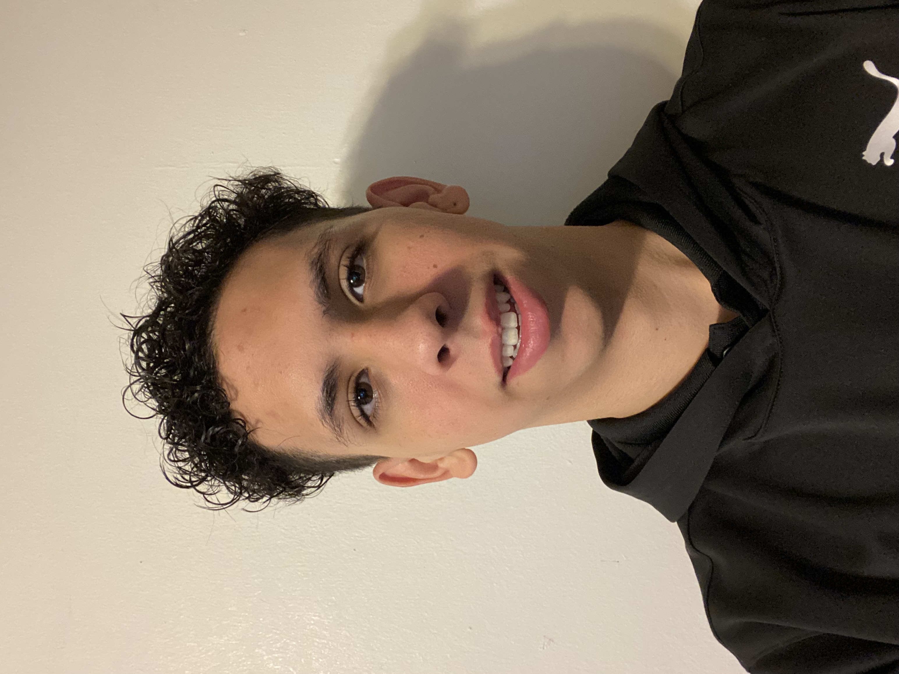
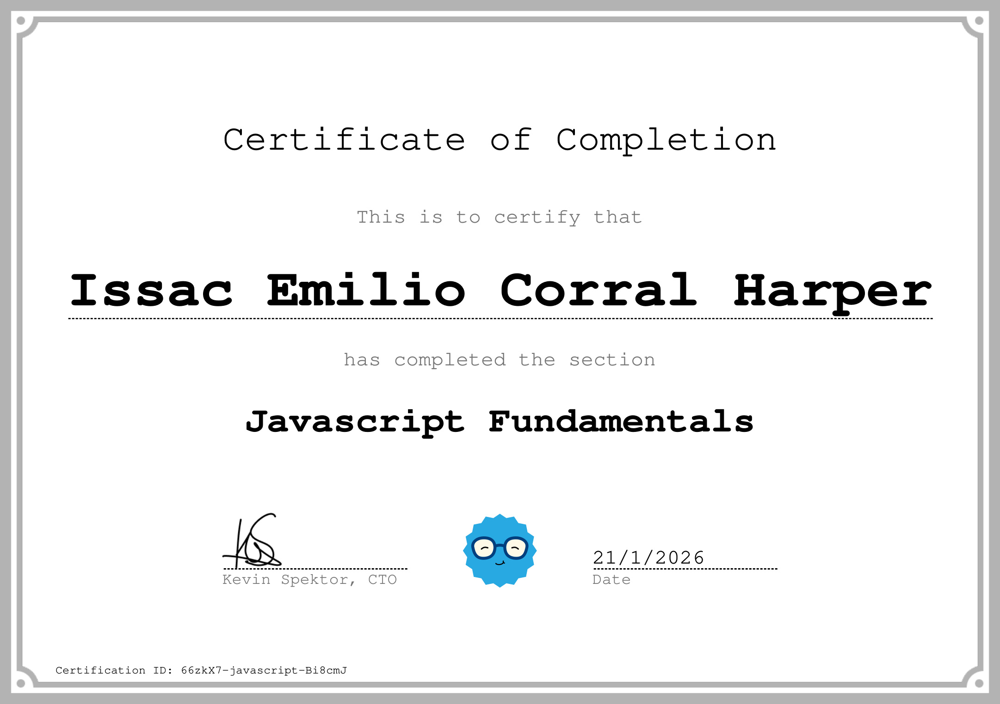
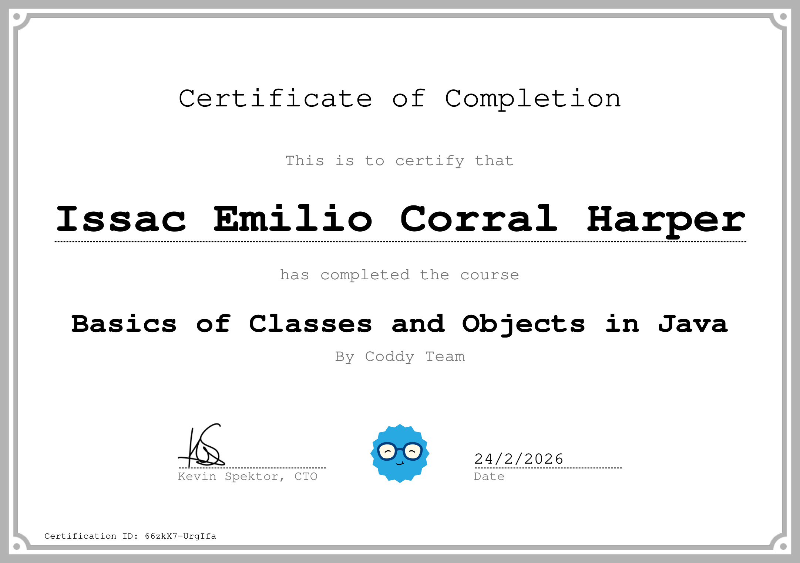

Frontend que llega a producción
No entrego maquetas: subo, despliego y mantengo. Manejo cPanel, FTP con FileZilla, Apache y Git en el flujo real de publicación.
Desarrollador Web Frontend en Comunicación Institucional
Universidad de Montemorelos
Cada día construyo un ladrillo más.
Estudio Ingeniería en Sistemas Computacionales y llevo desde julio de 2024 construyendo y manteniendo interfaces web que usan estudiantes y visitantes reales. Mi base está en frontend; ahora avanzo hacia backend para trabajar de punta a punta.

Me destaco por aprender de forma proactiva y autodidacta las tecnologías que el campo laboral está pidiendo. Tengo experiencia sólida en frontend y disfruto el proceso de aprender backend para llegar a ser fullstack.
Lo que hago no se queda en ejercicios de clase: los proyectos que construyo están publicados, los usa gente que no me conoce, y los mantengo yo. Esa es la parte que más me ha enseñado — leer documentación oficial, integrar APIs, optimizar imágenes y sostener un sitio después de lanzarlo.
Trabajo bien en equipo y me muevo cómodo entre entornos distintos. En la preparatoria fui presidente de la clase de graduandos y en la universidad participé en el Hackathon FITEC 2025.
Cuatro cosas que definen la forma en que entrego.
No entrego maquetas: subo, despliego y mantengo. Manejo cPanel, FTP con FileZilla, Apache y Git en el flujo real de publicación.
Ya trabajo templates en PHP con MySQL como primer acercamiento al servidor, y estudio Python para consolidar el backend.
Cada tecnología que agrego viene con algo que la respalde: un proyecto publicado o una certificación con folio verificable.
Mi método por defecto es leer la fuente oficial. Es más lento al principio y mucho más barato de mantener después.
Los dos están en línea y los puedes abrir ahora mismo.
Octubre 2024 a abril 2025
Recorrido 360° del campus para quienes no pueden visitarlo en persona: aspirantes foráneos, familias y estudiantes internacionales. Es el proyecto con el que empecé a programar en serio.
Departamento de Comunicación Institucional
Sitio de la carrera de Terapia Física. Aquí salí del HTML plano y armé la vista con templates en PHP, que fue mi primer contacto real con lógica del lado del servidor.
En orden, como fueron pasando.
BIG School. Jornadas formativas de 6 horas, dirigidas por Brais Moure.
Coddy. Folio 66zkX7-javascript-Bi8cmJ.

Coddy. Folio 66zkX7-UrgIfa.

Estoy abierto a prácticas, colaboraciones y proyectos freelance de frontend. Escríbeme por el canal que te quede más cómodo; el correo es el más rápido.